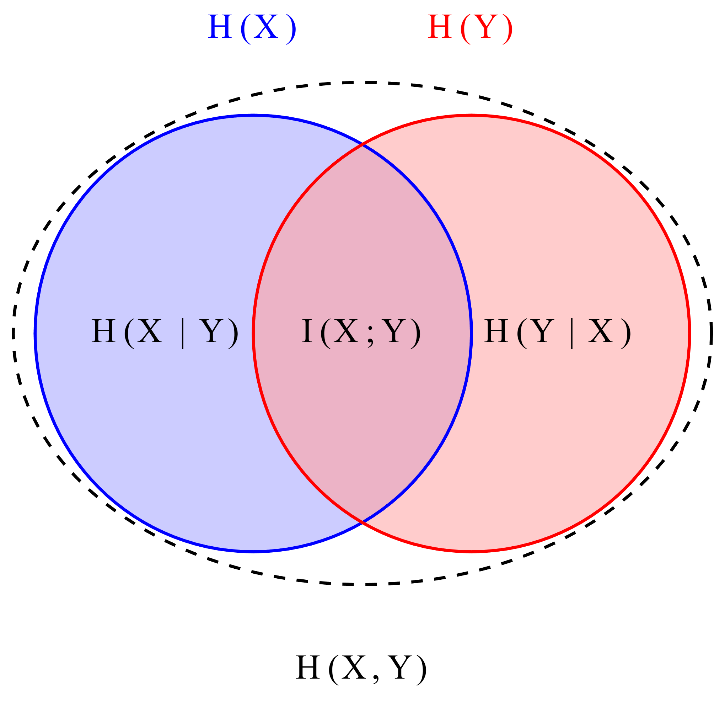

Question : Expliquer les propriétés de l’entropie à l’aide des exemples de l’entropie conditionnelle H(X|Y) et de l’entropie jointe H(X,Y). Utiliser des diagrammes de Venn.
Introduction aux concepts de base
Avant d’aborder les propriétés, rappelons les définitions essentielles illustrées par le diagramme de Venn suivant :

Légende :
- H(X) : Entropie de X (incertitude totale sur X)
- H(Y) : Entropie de Y (incertitude totale sur Y)
- H(X,Y) : Entropie jointe (incertitude totale du couple (X,Y))
- H(X|Y) : Entropie conditionnelle (incertitude restante sur X quand on connaît Y)
- I(X;Y) : Information mutuelle (information partagée entre X et Y)
Propriétés fondamentales illustrées
1. La conditionnement réduit l’entropie
Propriété : \(H(X|Y) \leq H(X)\)
Explication intuitive : Connaître Y réduit (ou au pire ne change pas) l’incertitude sur X.
Illustration : Dans le diagramme, \(H(X|Y)\) est la partie du cercle H(X) qui n’intersecte pas H(Y). Cette région est toujours plus petite ou égale à H(X) tout entier.
Cas extrêmes :
- Si X et Y sont indépendants : \(H(X|Y) = H(X)\) (les cercles sont disjoints)
- Si Y détermine complètement X : \(H(X|Y) = 0\) (les cercles se superposent)
2. L’entropie jointe comme union des incertitudes
Propriété : \(H(X,Y) = H(X) + H(Y|X) = H(Y) + H(X|Y)\)
Explication intuitive : L’incertitude totale sur le couple (X,Y) équivaut à l’incertitude sur X plus l’incertitude restante sur Y une fois X connu (ou vice-versa).
Formule visuelle :
- \(H(X,Y)\) = toute l’aire des deux cercles combinés
- \(H(X) + H(Y|X)\) = cercle H(X complet + partie de H(Y) non couverte par X
3. Sous-additivité de l’entropie jointe
Propriété : \(H(X,Y) \leq H(X) + H(Y)\)
Explication intuitive : L’incertitude totale sur (X,Y) ne peut pas dépasser la somme des incertitudes individuelles, sauf si X et Y sont indépendants (auquel cas c’est égal).
Illustration : L’aire d’unification de deux cercles est toujours ≤ à la somme des aires individuelles. L’égalité (\(H(X,Y) = H(X) + H(Y)\)) se produit quand les cercles sont disjoints (X et Y indépendants).
4. Relation triangulaire entre les mesures
Propriété : \(H(X,Y) = H(X) + H(Y) - I(X;Y)\)
Explication intuitive : L’entropie jointe est la somme des entropies individuelles moins ce qu’elles partagent en commun (pour ne pas compter deux fois l’information partagée).
Analogie ensembliste : Comme en théorie des ensembles : |A ∪ B| = |A| + |B| - |A ∩ B|
5. La chaîne des conditionnements successifs
Propriété : \(H(X|Y) \geq H(X|Y,Z)\)
Explication intuitive : Plus on a d’information (en conditionnant par plus de variables), plus l’incertitude restante diminue.
Illustration étendue : Si on ajoute un troisième cercle Z au diagramme, la région correspondant à \(H(X|Y,Z)\) est plus petite que \(H(X|Y)\).
Exemple concret avec un diagramme quantitatif
Considérons deux variables binaires X et Y avec la distribution jointe suivante :
| X | Y | P(X,Y) |
|---|---|---|
| 0 | 0 | 0.4 |
| 0 | 1 | 0.1 |
| 1 | 0 | 0.2 |
| 1 | 1 | 0.3 |
Calculons les valeurs :
- \(H(X) ≈ 0.971\) bits
- \(H(Y) ≈ 0.881\) bits
- \(H(X,Y) ≈ 1.846\) bits
- \(H(X|Y) = H(X,Y) - H(Y) ≈ 0.965\) bits
- \(I(X;Y) = H(X) - H(X|Y) ≈ 0.006\) bits (faible dépendance)
Observations sur cet exemple :
- \(H(X|Y) = 0.965 < H(X) = 0.971\) : le conditionnement réduit légèrement l’entropie
- \(H(X,Y) = 1.846 < H(X) + H(Y) = 1.852\) : légère sous-additivité
- \(I(X;Y)\) est très petit : les variables sont presque indépendantes
Applications pratiques en data science
1. Compression de données
- \(H(X|Y)\) représente la partie de X qui ne peut pas être prédite à partir de Y
- Dans la compression avec side information, on ne code que \(H(X|Y)\) au lieu de \(H(X)\)
- Exemple : compression stéréo où un canal peut être partiellement prédit à partir de l’autre
2. Apprentissage automatique
- Si \(H(X|Y)\) est faible, alors Y est un bon prédicteur de X
- La réduction \(H(X) - H(X|Y) = I(X;Y)\) mesure l’information que Y apporte sur X
- En sélection de caractéristiques : on choisit les Y qui minimisent \(H(X|Y)\)
3. Traitement du signal
- Dans un système de communication, \(H(X|Y)\) représente l’incertitude restante après réception
- Si le canal est bruité, \(H(X|Y) > 0\) : il reste de l’incertitude
- Un canal parfait aurait \(H(X|Y) = 0\)
Synthèse des propriétés clés
| Propriété | Formule | Interprétation visuelle | Condition d’égalité |
|---|---|---|---|
| Conditionnement réduit | \(H(X\|Y) \leq H(X)\) | Partie de H(X) hors intersection | X et Y indépendants |
| Entropie jointe additive | \(H(X,Y) = H(X) + H(Y\|X)\) | Union = premier cercle + partie exclusive du second | Toujours vraie |
| Sous-additivité | \(H(X,Y) \leq H(X) + H(Y)\) | Union ≤ somme des cercles | X et Y indépendants |
| Information mutuelle | \(I(X;Y) = H(X) - H(X\|Y)\) | Intersection des cercles | X et Y indépendants ⇒ I=0 |
Conclusion pédagogique
Les propriétés de l’entropie conditionnelle et jointe peuvent se résumer par une intuition géométrique simple :
- H(X) est un cercle représentant l’incertitude sur X
- H(Y) est un autre cercle
- H(X|Y) est ce qui reste du cercle X quand on retire l’intersection avec Y
- H(X,Y) est l’ensemble des deux cercles
- I(X;Y) est la zone de chevauchement
Cette visualisation explique pourquoi :
- Connaître Y ne peut qu’aider à réduire l’incertitude sur X (jamais l’augmenter)
- L’incertitude sur (X,Y) est au plus la somme des incertitudes individuelles
- L’information partagée est ce qui “économise” des bits en codage joint
Ces principes fondamentaux sont à la base de la compression de données, de l’apprentissage automatique et des communications numériques.